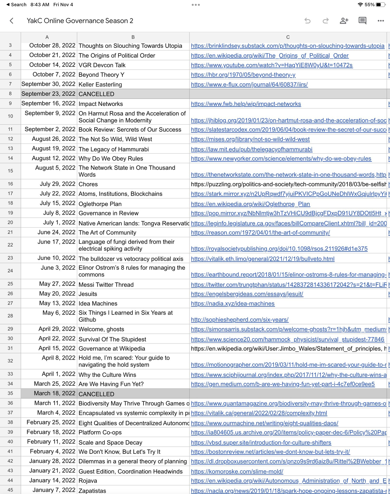

Check out @anthilemoon's new post, "The default effect: why we renounce our ability to choose". https://nesslabs.com/default-effect?utm_source=rss&utm_medium=rss&utm_campaign=default-effect
Check out @anthilemoon's new post, "Use timeboxing to regain calmness and control with Marie Ng, founder of Llama Life". https://nesslabs.com/llama-life-featured-tool?utm_source=rss&utm_medium=rss&utm_campaign=llama-life-featured-tool
yak collective governance study group is rolling up sleeves and attempting synthesis of season 2 readings today 😬

Check out @vgr's new newsletter, "Silicon Valley Vibe Shift". https://studio.ribbonfarm.com/p/silicon-valley-vibe-shift
Check out @HiredThought's new post, "5 Lessons From a Decade of Marriage". https://hiredthought.com/2022/11/05/5-lessons-from-a-decade-of-marriage/
Check out @antlerboy's new post, "Transduction — leading transformation — Issue #67". https://antlerboy.medium.com/transduction-leading-transformation-issue-67-4262aa659317?source=rss-97852f5a56ae------2
testing testing testing #yakbot
The Yak Rover weekly meeting is moving to a new time! Tuesdays 8PM UTC. Kicking off today in 30 minutes. If you've always wanted to join, drop by today. We're reviewing 2022 and brainstorming 2023 plans. https://discord.gg/wQAwr7De?event=1039606826402074624
Replying to @yak_collective
For reference, 8PM UTC is 12PM Pacific, 3PM ET, and 5AM Japan, and 9-11PM in EU. We hope more people from US CT and ET zone can make it now.
Replying to @yak_collective
Here's a slightly out-of-date intro to the project. The discord invite link in the first tweet will get you in, and you'll find zoom details once you're in. https://www.yakcollective.org/projects/yak-rover.html
Check out @antlerboy's new post, "“Be authentic!” “No, not like THAT!”". https://antlerboy.medium.com/be-authentic-no-not-like-that-d2a40706fc21?source=rss-97852f5a56ae------2
Check out @HiredThought's new post, "Ontological Pluralism". https://hiredthought.com/2022/11/09/ontological-pluralism/
Check out @anthilemoon's new post, "AI and I: The Age of Artificial Creativity". https://nesslabs.com/artificial-creativity?utm_source=rss&utm_medium=rss&utm_campaign=artificial-creativity
Check out @tomcritchlow's new post, "8 Years on the Road". https://tomcritchlow.com/2022/11/10/8-years-on-the-road/
Check out @vgr's new newsletter, "The Muskening". https://studio.ribbonfarm.com/p/the-muskening
Check out @HiredThought's new post, "Millstones and Learned Hopelessness". https://hiredthought.com/2022/11/12/millstones-and-learned-hopelessness/
Live in 20 minutes: Fermi Gym Open House! Come meet the YC Fermi estimation gang, learn about it, join our brainstorm for next season, try a fermi estimation problem https://discord.gg/K2V4TVgz?event=1037077418520891484
Replying to @yak_collective
Fermi estimation is the art of finding quick and dirty answers to arbitrary quantitative questions using physics first principles, order of magnitude reasoning, basic facts, and good guessing.
Replying to @yak_collective
The YC Fermi Gym does weekly problems to practice this skill and have fun. It grew out of a short salon series run by @jamesgiammona
Currently we play fermi games asynchronously on our discord channel, taking turns to set problems, and using a discord bot to keep track.
Check out @anthilemoon's new post, "The Uncertain Mind: How the Brain Handles the Unknown". https://nesslabs.com/uncertain-mind?utm_source=rss&utm_medium=rss&utm_campaign=uncertain-mind
Check out @anthilemoon's new post, "Connect all your workflows with Michael Dubakov, CEO of Fibery". https://nesslabs.com/fibery-featured-tool?utm_source=rss&utm_medium=rss&utm_campaign=fibery-featured-tool
Check out @vgr's new newsletter, "The Art of Gig is Out!". https://studio.ribbonfarm.com/p/the-art-of-gig-is-out
Check out @antlerboy's new post, "Isn’t it sometimes like this?". https://antlerboy.medium.com/isnt-it-sometimes-like-this-c8ede2369e4f?source=rss-97852f5a56ae------2
Check out @antlerboy's new post, "Are you authentic?". https://antlerboy.medium.com/are-you-authentic-d0137c183778?source=rss-97852f5a56ae------2
Check out @anthilemoon's new post, "Reopening the mind: how cognitive closure kills creative thinking". https://nesslabs.com/cognitive-closure?utm_source=rss&utm_medium=rss&utm_campaign=cognitive-closure
Check out @HiredThought's new post, "Easy Come, Easy Go". https://hiredthought.com/2022/11/25/easy-come-easy-go/
Check out the latest edition of the Yak Talk newsletter, "🚨 Calling All Yaks: Yak Collective Pop-Up Project". https://yakcollective.substack.com/p/calling-all-yaks-yak-collective-pop
Check out @vgr's new newsletter, "The Muskening, Part II". https://studio.ribbonfarm.com/p/the-muskening-part-ii
Check out @antlerboy's new post, "Where do you learn best with others?". https://antlerboy.medium.com/where-do-you-learn-best-with-others-496dc69986eb?source=rss-97852f5a56ae------2